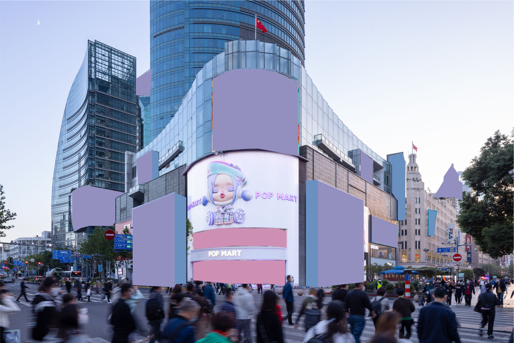
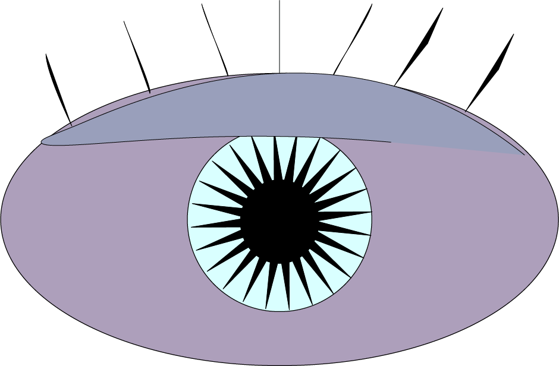

I chose this environment because it contains clear shapes, perspective, and interesting visual elements that make it suitable for vector recreation. The original photograph captures the natural layout of the space, including lighting, objects, and depth. When recreating the scene in Adobe Illustrator, I simplified many of the details into geometric shapes and used flat colors to represent shadows and highlights. This transformation allowed me to focus on the main structure of the environment while still preserving the overall composition and mood of the original image. The final Illustrator version demonstrates how a real-world environment can be translated into a stylized vector illustration.